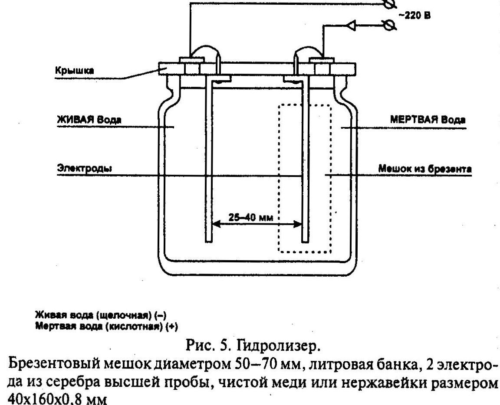

Активизированная вода (вода «живая» и «мертвая»)
")
С давних пор люди пытались найти панацею — универсальное средство от всех болезней, искали способы и возможности для вечной жизни. Пытались постичь тайну бытия, обт рести богатство и счастье. Эти мечты и планы заставляли пытливых людей со всех концов земли искать философский камень, чашу Священного Грааля, эликсир бессмертия, живую и мертвую воду. Эти поиски отражались в народных мифах, легендах и сказках. Народ одушевлял природу и все процессы, происходящие в ней, окружающий мир сравнивал с происходящим в нем самом, в человеке, в его мыслях и чувствах. Дождевые облака представлялись небесными реками и ручьями, гром — божественной ездой на колеснице. Лед, закрывающий зимой реки и озера, представлялся оковами, запирающими животворящие потоки и земные источники воды. Зима — концом жизни, временем, когда блекнут краски, замирает жизнь. А весна представлялась румяной, пышущей здоровьем и молодостью девицей, которая открывала замки и оковы, одаривала цветами и радостью. Не могла не родиться весной вера в оздо-равливающее влияние талой воды, весенних вод, первого дождя. Может, тогда и возникли мифы о живой и мертвой воде. В народных сказках живую воду также называют сильной или богатырской водой. А мертвую воду называют «целящей», способной сращивать части тела, разрубленного на куски, но оставляющей его бездыханным, мертвым. Остальное довершает вода живая — возвращает жизнь, наделяет богатырской силой. В сказаниях героя окропляют сначала мертвой, а потом живой водой, так же как в природе первые дожди сначала смывают с поверхности земли остатки уходящей зимы, а потом новые потоки оживляют почву и снова возрождают жизнь. В русских сказках живую и мертвую воду приносят Град, Гром и Вихрь или птицы, воплощающие эти стихии, — Орел, Сокол и Ворон. В русских народных сказках для раненых богатырей обычно просили вороненка принести живой и мертвой воды. Мертвой обрабатывали раны, и они затягивались, живую пили, и богатырь с новыми силами, живой и здоровый снова вставал на ноги.
Попытки научного обоснования свойств живой и мёртвой воды впервые были предприняты в конце 70-х годов прошлого века. В результате экспериментов ученые пришли к выводу, что это ничто иное, как активизированная вода, полученная путем электролиза. Электролиз обычной (содержащей соли) воды позволяет получить два ее типа: в анодной части — анолит (мертвая вода), а в катодной — католит (живая вода). Анолит имеет кислую реакцию, а католит — щелочную (по терминологии восточной медицинц, это вода с параметрами Инь и Ян). Такой электролиз воды проводится в специальных установках, с электродами и диэлектрической перегородкой (в простейшем случае — брезентом). Профессор П. Кирпичников дал свое заключение об этой активированной воде: «Выявлено, что анолит (мертвая вода) способствует быстрому «тушению» воспалительного процесса, очищает раны, а католит (живая вода) стимулирует их эпителизацию — заживление». Применяя электрохимически активированную воду, можно нейтрализовать избыток кислотности или щелочности организма, и тем самым способствовать его оздоровлению. Воду с заданными кислотными или щелочными свойствами, можно получить, смешивая в определенных пропорциях «живую» и «мертвую» воду. Прием живой (католита) и мертвой(анолита) воды регулируется в зависимости от назначения: мертвая убивает бактерии и подавляет процесс деления клеток, а живая активизирует восстановительные процессы в организме на клеточном уровне.
В начале 1981 года инженер Кратов сконструировал прибор для приготовления живой и мертвой воды (В. М. Латышев. Неожиданная вода.// Изобретатель и рационализатор. № 2, 1981; Ю. Егоров. Активизированная вода перспективна.// Изобретатель и рационализатор. № 9, 1981). Уже тогда электрохимические установки для получения анолита и католита, разработанные под руководством ташкентского инженера В. М. Бахира и серийно производимые на заводе «Большевик» в Узбекистане, обеспечивали сотни тысяч рублей экономии при бурении скважин в Средней Азии, на Украине, на морских промыслах Азербайджана. В 1985 г. В. М. Бахир защитил кандидатскую диссертацию, и ВАК СССР официально зафиксировала создание им нового научно-технического направления — электрохимической активации.
Будучи больным воспалением почек и аденомой предстательной железы, Кратов был госпитализирован в урологическое отделение Ставропольского медицинского института. От предложенной врачами операции он отказался и был выписан. Первое испытание полученной воды он провел на незаживающей более 6 месяцев ране на руке сына. Проведенная проба лечения оказалась удачной: рана на руке сына зажила на вторые сутки. Сам автор начал пить «живую» воду по полстакана перед едой 3 раза в день и почувствовал бодрость. Аденома за неделю исчезла, прошел радикулит и опухоль ног. Для большей убедительности после недели приема живой воды автор прошел обследование в поликлинике со всеми анализами, при которых не обнаружилось никаких признаков болезни, нормализовалось давление. Однажды его соседка обварила руку кипятком, получив ожог 3-й степени. Для лечения была использована живая и мёртвая вода — ожог за два дня исчез. У сына его знакомого, инженера Гончарова, в течение 6 месяцев гноилась десна, в горле образовался нарыв. Применение различных способов лечения не дало желаемого результата. Для лечения автор порекомендовал 6 раз в день полоскать мертвой водой горло и десну, а после принимать внутрь по стакану живой воды. В результате мальчик полностью выздоровел в течение 3-х дней.
Кратов обследовал более 600 человек с различными заболеваниями, и все они имели положительный результат при лечении активизированной водой. Использование активизированной воды на себе, на членах семьи и многих других людях дало возможность автору составить практическую таблицу процедур лечения ряда заболеваний, определить сроки лечения и проследить ход и характер выздоровления.
Мертвая вода — прекрасное бактерицидное средство. Применяется для профилактики и лечения простудных заболеваний, гриппа, ангины. Снижает кровяное давление, успокаивает нервную систему, улучшает сон. Помогает при лечении пародонтоза, прекращает кровотечение десен, растворяет камни на зубах. Снижает боли в суставах, помогает при кишечных расстройствах. Дерматомикозы (грибковые заболевания кожи) проходят за несколько дней. Дезинфекционные свойства мертвой воды усиливаются, если в ней растворить 5 г поваренной соли перед включением электролизера.
Бытовое назначение мертвой воды: дезинфекция жилых и нежилых помещений, питьевой воды, грунта, тары, одежды, обуви, удаление накипи со стенок посуды, увеличение срока хранения овощей и фруктов и многое другое. Нормализует работу пищеварительного тракта у домашних животныхи птицы.
Живая вода — прекрасный стимулятор, тонизатор, источник энергии. Приводит в движение весь организм, придает энергию, бодрость, стимулирует восстановление клеток, мягко повышает кровяное давление, улучшает обмен веществ. Великолепно заживляет раны, язвы, в т. ч. желудка и 12-перстной кишки, пролежни, ожоги. Помогает при лечении аденомы предстательной железы, при лечении и профилактике атеросклероза, полиартрита, остеохондроза.
Совместное применение живой и мертвой воды помогает бороться с такими болезнями как аллергия, гепатит, псориаз, женскими заболеваниями (кольпит, эрозия шейки матки).
Однако под воздействием неблагоприятных факторов кислотно-щелочное равновесие внутренней среды человеческого организма может отклоняться либо в сторону закисления, либо в сторону защелачивания. И то и другое неблагоприятно для организма и способствует его ослаблению, провоцирует вредные изменения в том или ином органе или системе. Следует обратить внимание также на то, что живая вода, обладая высокой проникающей способностью, легко проходит внутрь клеток и, накапливаясь в них, приводит к повышению внутриклеточного давления. Это может привести к разрыву оболочек и гибели клеток. За чрезмерное увлечение живой водой можно поплатиться кровоизлиянием в желудке и кишечнике. Исходя из этих положений, назначают схему внутреннего и наружного потребления этих видов воды. Мертвую воду лучше принимать в соответствии с рекомендациями опытного специалиста. Потребление живой воды не так строго ограничено, но также требует внимания.
Электроактивированная вода медициной официально не признана, хотя имеются сведения об излечении с ее помощью таких болезней, как желтуха, радикулит, гипертоническая болезнь, аденома предстательной железы и др. Разногласия в оценке живой и мертвой воды наблюдаются в основном на уровне академической и прикладной наук. Представители первой предостерегают от широкого использования электроактивированной воды в лечебных целях. Возражения, в частности, вызывает электроактивированная вода, приготовленная в домашних условиях по методикам, изложенным в различных научно-популярных изданиях. Состав получаемых в результате электролиза продуктов во многом предопределяется характеристикой воды, в частности, ее минерализацией, а также зависит от условий протекания процесса электролиза.
Материал электродов, плотность тока, температура, при которой протекает процесс, а также ряд других параметров выступают здесь решающими факторами. Если, например, в качестве материала электрода выбрана нержавеющая сталь, в получаемом растворе могут образоваться ионы железа и никеля, вредные для организма человека. В воду переходит и хром, ядовитый и опасный элемент.
Неквалифицированное применение активированной воды ведет к дискредитации ее положительных сторон.
Электроды для производства живой и мертвой воды должны изготавливаться из серебра или меди. Время приготовления воды ограничивается 5 минутами, иногда 15 минутами (для аппарата с положительным электродом в виде ионизатора). Концентрация живой и мертвой воды при хранении со временем практически не меняется. Воду готовят на срок употребления до одного месяца, и все таки желательно готовить ее не более чем на 5—7 дней.
Принимая воду или проводя другую водную процедуру, необходимо расслабиться, стать чувствительным и проницаемым. Мысленно сопровождать действие воды, процедуры в вашем организме. Только тогда будет польза от лечения. Если всё это делать на ходу, без эмоций, то всё будет напрасным.
Название болезни
Порядок проведения процедур
Результат
Аденома предстательной железы
Ежемесячно на протяжении 20 суток за 30 мин до еды принимать по 150 г живой и мертвой воды (через день). Затем еще 5 суток пить живую воду. Желательно дополнительно принимать мертвую воду и на ночь. Массаж: лежа в ванне, делать массаж промежности струей душа; делать пальцем очень осторожно массаж через промежность; езда на велосипеде.
Клизма из теплой живой воды, 200 г. На ночь ставить компресс на промежность из живой воды. Предварительно подмыться с мылом, смочить промежность мертвой водой, дать просохнуть, вставить свечу из очищенного сырого картофеля в задний проход, предварительно замочив ее в живой воде. Принимать солнечные ванны. Полезна регулярная половая жизнь, но при половом акте не регулировать семяизвержение.
Больше употреблять чеснока, лука, зелени.
Через
3—4 месяца выделяется слизь, опухоли не ощущается.
С целью профилактики этот курс периодически повторять.
Название болезни
Порядок проведения процедур
Результат
Аллергия
Полоскать носоглотку, полость носа и рта мертвой водой 1-2 минуты, затем живой водой 3-5 минут 3-4 раза в день. Делать примочки из мертвой воды на сыпь и отеки.
Сыпь и отеки исчезают.
Ангина
В течение 3 суток 5 раз в день после еды полоскать горло и носоглотку мертвой водой и после каждого полоскания выпить четверть стакана живой воды. Обязательно полоскать рот и горло до и после еды.
Температура снижается в первый день, на 3-й сутки болезнь прекращается
Атероскл ероз
Пить мертвую и живую воду 2-3 дня ежемесячно за 30 мин до еды по 150 г. Компресс из живой воды наложить на шейный участок позвоночника. В пищу больше включать свежую капусту, растительное масло. После еды каждые 30 мин пить 30 г некипяченой воды. Съедать по 2—3 дольки чеснока ежедневно.
Головные боли в первый месяц уменьшаются, а затем и вовсе исчезают.
Боль в суставах рук и ног
3 раза в день перед едой принимать по 0,5 стакана мертвой воды в течение 2-х суток
Боль прекращается в 1-й день
Бронхиальная астма
Пить живую воду, подогретую до 36°, после еды по 100 г. Делать ингаляцию живой водой с содой. Санация носоглотки мертвой, а затем живой водой после еды, каждый час. Прикладывать горчичник на область груди и к стопам. Рекомендуется горячая ванна для ног. Курс лечения 5 дней. Повторять каждый месяц.
Здоровье улучшается уже на 2-й день.
Бронхит рецидивирующий
Рекомендуются те же процедуры, что и при бронхиальной астме. Повторять 3-4 раза в течение часа. Курс лечения 5 дней. Повторять каждый месяц.
Здоровье улучшается уже на 2-й день.
Варикозное расширение вен
Ставить компресс: промыть вздувшиеся участки мертвой водой, затем смочить марлю живой водой, приложить к этим участкам и покрыть целлофаном, утеплить и закрепить. Выпить один раз полстакана мертвой воды, а затем через 1-2 часа принимать по полстакана живой воды через каждые 4 часа (всего четыре раза в день). Процедуру повторять в течение 2-3 дней.
На третий день вены не будут заметны.
Воспаление печени
В течение 4-х дней принимать 4 раза по 0,5 стакана воды в день, в 1-й день только мертвую, а в последующие — живую воду.
Воспаления, закрытые нарывы, фурункулы
В течение 2-х суток прикладывать компресс к воспаленному участку, смоченный подогретой мертвой водой.
Заживание происходит в течение 2-х суток
Гельминтоз
(глисты)
Очистительная клизма мертвой водой, затем через час живой водой. Пить в течение суток мертвую воду по 150 г каждыеЗО мин. Состояние может быть неважное. Затем в течение суток пить живую воду по 150 г за 30 мин до еды.
Если через двое суток полного выздоровления не наступило, то курс повторить.
Геморрой, трещины заднего прохода
В течение 1-2 суток утром и вечером промывать трещины, узлы мертвой водой, а затем прикладывать тампоны с живой водой, меняя их по мере высыхания. Тампоны можно делать в форме свечи из картошки, смачивать живой водой, вставлять в задний проход.
Кровотечения прекращаются, трещины заживают в течение 2—3 суток
Название болезни
Порядок проведения процедур
Результат
Гигиена лица
Утром и вечером после мытья лицо протирают вначале мертвой, затем живой водой. То же делать после бритья. Кожа становится гладкой, исчезают угри.
Гипертония
В течение дня принимать 2 раза по 0,5 стакана мертвой воды.
Давление нормализуется '
Гипотония
В течение суток 2 раза принимать по 0,5 стакана живой воды.
Давление нормализуется
Гнойные раны
Рану промыть мертвой водой, а через 3—5 минут смочить живой водой, затем 5—6 раз в сутки смачивать только живой водой
В* течение 5—6 суток происходит заживление.
Головные боли
Выпить один раз 0,5 стакана мертвой воды.
Боль проходит через 30-50 мин.
Грипп
В течение суток 8 раз полоскать нос и рот мертвой водой, а на ночь выпить 0,5 стакана живой воды.
В течение суток
грипп проходит.
Запор
Выпить натощак 100 г холодной живой воды. Если запоры хронические, то принимать ежедневно. Можно поставить клизму из теплой живой воды.
Зубная боль. Повреждение зубной эмали
Полоскать полость рта мертвой водой в течение 5—10 мин.
Боль исчезает сразу.
Изжога
Выпить 0,5 стакана живой воды. Изжога должна прекратиться. Если результата нет, то нужно выпить мертвой воды.
Изжога прекращается.
Название болезни
Порядок проведения процедур
Результат
Кашель
В течение 2 суток пить 4 раза в день по 0,5 стакана после еды живой воды.
Кашель прекращается.
Кольпит
Подогреть мертвую и живую воду до 37-40 °С и на ночь спринцевать мертвой водой, а через 15-20 мин. живой водой. Процедуры повторять 2—3 дня.
Через 2—3 дня кольпит проходит.
Лишай, экзема
В течение 10 минут 4-5 раз смачивать пораженные участки мертвой водой. После про-сыхания, через 20-25 минут смачивать живой водой. Процедуру повторять 4-5 раз ежедневно. Пить за полчаса до еды 100 г живой воды.
Через 5 дней болезнь излечивается. Если через 5 дней на коже останутся следы, сделать 10-дневный перерыв и лечение повторить.
Мытье волос
Вымыть голову с шампунем, вытереть, смочить волосы мертвой водой, а через 3 минуты живой водой.
Пропадает
перхоть,
волосы
становятся
мягче.
Неприятный запах от ног
Вымыть теплой водой ноги, вытереть насухо, затем смочить мертвой водой, а через 10 минут — живой. Обувь протереть внутри тампоном, смоченным мертвой водой и высушить. Носки постирать, смочить мертвой водой и высушить. Для профилактики можно носки после стирки (или новые) намочить мертвой водой и высушить.
Название болезни
Порядок проведения процедур
Результат
Облите-рирую-ший эн-дартери-ит нижних конечностей
Делать все так, как при трещинах пяток и рук, плюс за 30 мин до еды принимать мертвую воду по 100 г. Эта болезнь сопровождается тем, что на подошвах ног сохнет, а затем за счет отмирания живых клеток утолщается кожа, затем она трескается. Если видны вены, то можно поставить компресс на эти места или хотя бы смочить мертвой водой, дать просохнуть и смочить живой водой. Необходим и самомассаж.
Вылечивается за 6-10 дней.
Ожоги
При наличии пузырей их нужно проколоть, а затем пораженные участки 4—5 раз смочить мертвой водой, а через 20—25 минут живой, и в последующие дни по 7—8 раз смачивать участки живой водой. Процедуры проводить 2-3 дня.
Пораженные места излечиваются за 2-3 дня.
Опухшие руки
В течение 3 суток принимают воду по 4 раза в день за 30 мин. до еды: 1-й день — мертвая вода по 0,5 стакана; 2-й день — мертвая вода по 0,75 стакана, 3-й день — по 0,5 стакана живой воды.
Опухоль спадает, боли нет.
Остеохондроз позвоночника
Пить сутки мертвую и сутки живую воду через день за 30 мин до еды по 150 г. Приложить к больному месту компресс с использованием мертвой воды. Желателен массаж.
Курс лечения — 10 дней.
Отек ног
Без консультации с врачом не лечить, это может быть активная фаза ревматизма сердца!
За 30 мин до еды выпивать 150 г мертвой воды, на второй день пить живую воду. Смочить больные места ног мертвой водой, а когда высохнут — живой. Можно также поставить компресс на поясницу на ночь. Для этого растворить в воде соль 1:10, намочить в этом растворе полотенце и положить на поясницу. Как только полотенце нагреется, снова смочить.
Процедуру повторить 3—4 раза.
Название болезни
Порядок проведения процедур
Результат
Пародонтоз
6 раз в течение суток полоскать по 10—15 ми-* нут мертвой, а затем живой водой полость рта и горло. После процедуры принимать внутрь по 50 г живой воды.
Улучшение наступает в течение трех дней.
Полиартрит обменный с болями в суставах
В течение 10 суток 3 раза в день перед едой выпивать по полстакана мертвой воды. На ночь прикладывать компресс с мертвой водой к больным местам. Выпить 150 г живой воды после еды.
Улучшение наступает в первый же день.
Понос
Выпить 0,5 стакана мертвой воды. Если в течение часа понос не прекратится, процедуру повторить.
Боль в животе прекращается через
20-30 минут.
Порез, укол,разрыв
Рану промыть мертвой водой. Наложить компресс с живой водой.
Рана заживает в течение 1-2 суток.
Простуда
Наложить на шею компресс с теплой мертвой воды и пить 4 раза в день по 0,5 стакана мертвой воды перед едой. На ночь протереть подошвы растительным маслом, надеть теплые носки.
Простуда шеи
Сделать на шею компресс, смоченный в теплой мертвой воде и.пить 4 раза в день по 0,5 стакана перед едой.
Боли исчезают за 1—2 дня.
Радикулит
В течение суток 3 раза перед едой выпить 0,75 стакана живой воды
Боль проходит в течение суток.
Название болезни
Порядок проведения процедур
Результат
Раны гнойные
Рану сначала промыть мертвой водой, через 3-5 минут — живой. Затем в течение суток 5-6 раз промывать только живой водой.
Рана сразу подсыхает и в течение двух суток заживает.
Расширение вен, кровотечение из разорвавшихся узлов
Промыть вздувшиеся и кровоточащие участки тела мертвой водой, затем смочить кусочек марли живой водой и приложить к вздувшимся участкам "вен. Внутрь принимать по 0,5 стакана мертвой воды, а через 2-3 часа начать прием по 0,5 стакана живой воды с промежутками 4 часа 4 раза в день. Процедуру повторить в течение 2—3 дней.
Участки вздувшихся вен рассасываются, раны заживают.
Ревматоидный артрит
За полчаса до еды через день пить по 150 г живой и мертвой воды. Ставить компресс с той водой, которую пьете, на поясничную область, включая копчик.
Сахарный диабет, болезни поджелудочной железы
Пить живую воду постоянно за 30 мин до еды по 150 г. Пить некипяченую воду, можно отстоянную 6 суток на кремне, каждые 30 мин по 30 г.
Стоматит острый
Полоскать мертвой водой в течение 10-15 минут, после этого полоскать 2-3 минуты живой водой. Периодически повторять процедуру в течение трех суток.
Трещины на пятках, руках
Вымыт ноги, руки теплой водой с мылом и дать просохнуть. Смочить мертвой водой и дать просохнуть. Поставить компресс из живой воды на ночь, утром соскоблить с ног белый налет и смазать подсолнечным маслом дать впитаться. Тщательно продезинфицировать обувь, комнатные тапочки.
Через 3-4 дня пятка будет здоровой.
Название болезни
Порядок проведения процедур
Результат
Удаление отмершей кожи со ступней ног
В мыльной воде попарить ноги, обмыть их в теплой воде, затем, не вытирая, намочить ноги в подогретой мертвой воде, потирая участки с наростами, удалить отмершую кожу, промыть ноги в подогретой воде, насухо вытереть.
Улучшение самочувствия, нормализация организма
Утром и вечером после приема пищи полоскать рот мертвой водой и выпить 100 мл живой воды.
Язва желудка, двенадцатиперстной кишки, гастрит
Пить мертвую и живую воду за 30 мин до еды по 150 г (через день). И каждые полчаса выпивать 30 г некипяченой воды, отстоянной 6 суток на кремне или сок свежей капусты, а также липовый чай с медом. Курс лечения — 10 суток.
Повторять ежемесячно, до выздоровления.
Примечание: при употреблении внутрь только живой воды возникает жажда, ее надо утолять компотом или подкисленным чаем. Интервал между приемами мертвой и живой воды должен быть не менее 2-х часов.
Активизированная вода со щелочными свойствами вода получается следующим образом: электролитная посуда, заполненная водой, разделяется полупроницаемой перегородкой (в простейшем случае — брезентом) на катодную и анодную области, через воду пропускается ток (рис. 5). Такая перегородка, пропуская ток, не дает смешиваться продуктам электролиза.
Инструкция по эксплуатации гидролизера
1. В стеклянную банку емкостью 1 л налить водопроводной воды до указанного на рисунке уровня.
2. На банку надеть крышку с электродами, в мешок поместить электрод без диода.
3. Включить электролизер в сеть, выждать 15-20 мин., отключить гидролизер.
4. Снять с банки крышку с электродами, шлангом отсосать кислую воду в отдельный сосуд, затем из мешка отсосать щелочную воду в другой сосуд.
5. Брезентовый мешок без промывки годен к употреблению не более 2—3 циклов. На мешке откладывается налет, который периодически надо удалять мытьем. Мешок и банка должны храниться раздельно.
7. Материалом для мешка может служить любой химический фильтр, в частности, брезент, джинсовый материал и т. д.
8. Концентрацию кислого раствора опеределяют лакмусовой бумагой (продается в магазине химических реактивов).
9. При гидролизе вода нагревается. Концентрация раствора бывает достаточной, если температура воды более 45°, т. е. рука терпит с трудом, и голой рукой банку не удержать.
